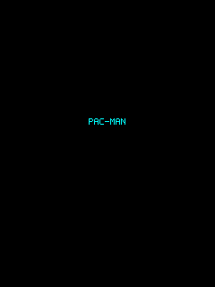
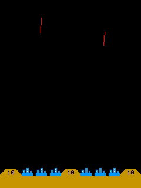
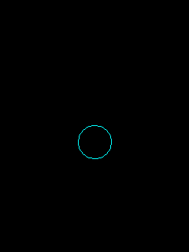
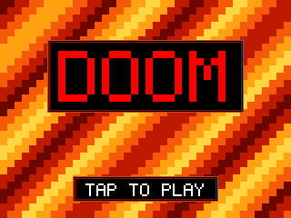
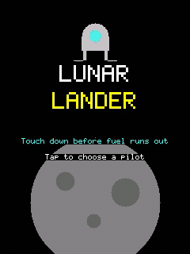
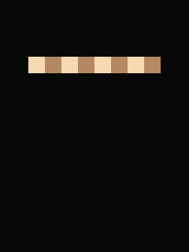
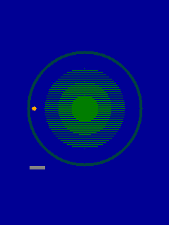
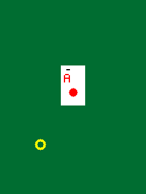
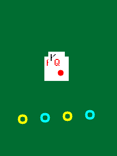

TFT Games
The playable games built for the ELEGOO TFT touch shield, with CPU-played demos.
Juno ships 14 games (and a paint demo) for the ELEGOO 2.8" TFT touch screen shield on the Arduino UNO R4 WiFi. Every one is plain Java in juno-examples (the paint demo lives in api/tft), compiled ahead of time by Juno to Cortex-M4 assembly, with no JVM or interpreter on the board: just the Java subset described in FEATURES.md and the TftTouchShield API described in TFT-TOUCH-SHIELD.md.
How to play
Set up arduino-cli and the UNO R4 core as described in ARDUINO.md, plug the shield onto the board, and install the reactor once so the example module can resolve the Juno plugin:
./mvnw install
Then flash a game by its class name. Every game in this page lists its own command; they all follow this pattern:
./mvnw -f juno-examples/pom.xml compile juno:upload \
-Djuno.main=io.github.jabrena.juno.games.<Game>
juno:upload finds the board by itself, or takes -Djuno.port=<PORT>. To check that a game builds without touching any hardware, use juno:verify instead of juno:upload.
Most games target one board, so that single command is all they need. A few, like Tempest, declare
@Board({ArduinoUnoQ.class, ArduinoUnoR4WiFi.class}) because they use nothing board-specific — for
those, add -Djuno.board=<id> (arduino-uno-q or arduino-uno-r4-wifi) to say which one to build for; omitting it
when more than one board is declared fails with the list of choices instead of guessing.
The screenshots were rendered on a desktop by running each game's unmodified code, including the real TftTouchShield driver and its font, against an emulation of the shield's ILI9341 display controller (see Testing without the board). The real panel's colors vary slightly.
Contents
- Arcade: Pac-Man, Missile Command, Tempest, Star Wars, The Empire Strikes Back, Red Baron, Star Trek, Space Paranoids, DOOM, Lunar Lander
- Board and strategy: Chess, Battleship
- Cards and casino: Blackjack, Texas Hold'em
Arcade
Real-time games driven by touch.
Pac-Man

Eat every dot in the maze while four ghosts chase you. Play it yourself or watch the CPU. Runs on the Arduino UNO Q.
./mvnw -f juno-examples/pom.xml compile juno:upload \
-Djuno.main=io.github.jabrena.juno.games.pacman.PacMan
Missile Command

Defend six cities from falling warheads by tapping the sky to launch interceptors. Play it yourself or watch the CPU. Runs on the Arduino UNO Q.
./mvnw -f juno-examples/pom.xml compile juno:upload \
-Djuno.main=io.github.jabrena.juno.games.missilecommand.MissileCommand
Tempest

Move a claw around the rim of a tube and shoot the enemies climbing up it. Play it yourself or watch the CPU. Runs on both the UNO Q and the UNO R4 WiFi; pick one with -Djuno.board:
# Arduino UNO Q
./mvnw -f juno-examples/pom.xml compile juno:upload \
-Djuno.main=io.github.jabrena.juno.games.tempest.Tempest \
-Djuno.board=arduino-uno-q
# Arduino UNO R4 WiFi
./mvnw -f juno-examples/pom.xml compile juno:upload \
-Djuno.main=io.github.jabrena.juno.games.tempest.Tempest \
-Djuno.board=arduino-uno-r4-wifi
Star Wars
Fly an X-wing against TIE fighters, then down the Death Star trench to hit the exhaust port. Play it yourself or watch the CPU. Runs on the Arduino UNO Q.
./mvnw -f juno-examples/pom.xml compile juno:upload \
-Djuno.main=io.github.jabrena.juno.games.starwars.StarWars
The Empire Strikes Back
Fly a snowspeeder over Hoth against probe droids and AT-AT walkers, then the Millennium Falcon through an asteroid field. Play it yourself or watch the CPU. Runs on the Arduino UNO Q.
./mvnw -f juno-examples/pom.xml compile juno:upload \
-Djuno.main=io.github.jabrena.juno.games.empirestrikesback.EmpireStrikesBack
Red Baron
Dogfight enemy biplanes and strafe ground targets from the cockpit of a First World War plane. Play it yourself or watch the CPU. Runs on the Arduino UNO Q.
./mvnw -f juno-examples/pom.xml compile juno:upload \
-Djuno.main=io.github.jabrena.juno.games.redbaron.RedBaron
Star Trek
Command the Enterprise through sectors of Klingon battlecruisers with phasers, photon torpedoes and warp. Play it yourself or watch the CPU. Runs on the Arduino UNO Q.
./mvnw -f juno-examples/pom.xml compile juno:upload \
-Djuno.main=io.github.jabrena.juno.games.startrek.StarTrek
Space Paranoids
Drive a tank through a wireframe maze and destroy the flying hunters before time runs out. Play it yourself or watch the CPU. Runs on the Arduino UNO Q.
./mvnw -f juno-examples/pom.xml compile juno:upload \
-Djuno.main=io.github.jabrena.juno.games.spaceparanoids.SpaceParanoids
DOOM

Wireframe DOOM in landscape, drawn with DOOM's own BSP renderer: walls, doors, lifts and monsters from all four episodes. Pick HUMAN (touch to turn, walk and fire) or CPU (an autopilot that plays like a person and sometimes dies), then choose the episode and skill. Movement keeps DOOM's rules: the marine climbs steps of at most 24 units, slides along walls and round corners, cannot pass the windows and other lines the map marks impassable, and keeps a small body's distance from walls, so the camera never sees through them. Lifts lower when the marine comes near one of their lines, wait and rise again, and doors opened by a switch or trigger elsewhere open as the marine approaches. Runs on the Arduino UNO Q.
At startup the game scans your own DOOM1.WAD on the shield's SD card with java.io.RandomAccessFile (see Storage), but does not load a map yet. After the menus it loads the selected episode's first map, with a progress bar and the seconds left. Reaching an exit opens a DOOM-style intermission with kills, items, discovered secrets and elapsed time; while it shows, the next map is read and the CPU's route planned (LOADING E1M2 with the bar), and a tap on TAP TO PLAY E1M2 starts it. When the marine dies, choose to restart the map or quit to the title. Finishing E?M8 opens an episode story card and then returns to the title; tapping the title opens the pilot, episode and skill menus again. Difficulty controls the WAD's easy, medium and hard monster and pickup placements. With no card, no file, or too little arena, it plays a small original test map built into flash instead; DOOM's levels are never committed. Copy DOOM1.WAD to the card's root, then build with a bigger arena, since the largest supported map tables are held in RAM:
./mvnw -f juno-examples/pom.xml compile juno:upload \
-Djuno.main=io.github.jabrena.juno.games.doom.Doom -Djuno.Xmx=92k
The CPU plans its route through the map's subsectors to the exit, riding lifts and opening doors on the way, and finishes E1M1, E1M2, E1M5, E1M6 and E1M7. Maps whose exit needs stairs that build or floors that move are not finished yet: there the CPU walks as close to the exit as it can reach. Reading a map from the SD card takes 10 to 35 seconds on the UNO Q, and planning its route a few more. juno:monitor shows what the game is doing over serial: each map's read and planning time, and with every frame report the frame rate, the marine's position, the waypoint the CPU walks to, its health and the routes it planned.
Lunar Lander

Land a spacecraft softly on a pad before the fuel runs out. Play it yourself or watch the CPU.
./mvnw -f juno-examples/pom.xml compile juno:upload \
-Djuno.main=io.github.jabrena.juno.games.lunarlander.LunarLander
Board and strategy
Turn-based games against a computer opponent that searches ahead.
Chess

Play White against a 3-ply chess engine, or watch it play itself. Runs on both the UNO Q and the UNO R4 WiFi; select the connected board explicitly.
# Arduino UNO Q
./mvnw -f juno-examples/pom.xml compile juno:upload \
-Djuno.main=io.github.jabrena.juno.games.chess.Chess \
-Djuno.board=arduino-uno-q
# Arduino UNO R4 WiFi
./mvnw -f juno-examples/pom.xml compile juno:upload \
-Djuno.main=io.github.jabrena.juno.games.chess.Chess \
-Djuno.board=arduino-uno-r4-wifi
Battleship

Sink the enemy fleet on a grid before it sinks yours. Play it yourself or watch two CPU commanders. Runs on both the UNO Q and the UNO R4 WiFi; select the connected board explicitly.
# Arduino UNO Q
./mvnw -f juno-examples/pom.xml compile juno:upload \
-Djuno.main=io.github.jabrena.juno.games.battleship.Battleship \
-Djuno.board=arduino-uno-q
# Arduino UNO R4 WiFi
./mvnw -f juno-examples/pom.xml compile juno:upload \
-Djuno.main=io.github.jabrena.juno.games.battleship.Battleship \
-Djuno.board=arduino-uno-r4-wifi
Cards and casino
Card games and games of chance, played for chips or credits only.
Blackjack

Beat the dealer to 21 with chips. Play it yourself or watch an automated player. Runs on both the UNO Q and the UNO R4 WiFi; select the connected board explicitly.
# Arduino UNO Q
./mvnw -f juno-examples/pom.xml compile juno:upload \
-Djuno.main=io.github.jabrena.juno.games.blackjack.Blackjack \
-Djuno.board=arduino-uno-q
# Arduino UNO R4 WiFi
./mvnw -f juno-examples/pom.xml compile juno:upload \
-Djuno.main=io.github.jabrena.juno.games.blackjack.Blackjack \
-Djuno.board=arduino-uno-r4-wifi
Texas Hold'em

No-limit Texas Hold'em against three CPU opponents. Play a seat yourself or watch all four play. Runs on both the UNO Q and the UNO R4 WiFi; select the connected board explicitly.
# Arduino UNO Q
./mvnw -f juno-examples/pom.xml compile juno:upload \
-Djuno.main=io.github.jabrena.juno.games.texasholdem.TexasHoldem \
-Djuno.board=arduino-uno-q
# Arduino UNO R4 WiFi
./mvnw -f juno-examples/pom.xml compile juno:upload \
-Djuno.main=io.github.jabrena.juno.games.texasholdem.TexasHoldem \
-Djuno.board=arduino-uno-r4-wifi
Testing without the board
./mvnw test plays every game on an emulated shield, on any machine and in CI. The tests in
juno-examples/src/test/java replace the handful of native hardware classes with plain Java test
doubles, which come first on the test classpath (the juno:compile/juno:upload goals still use
the real ones):
Gpiodecodes the ILI9341 bus that the realTftTouchShielddriver bit-bangs into a framebuffer, and answers the touch panel's analog reads, so tests can tap the screen.ClockandDelayrun on simulated time: waiting is instant and each clock reading costs a millisecond, so frame loops and time-budgeted searches behave the same on every run.Randomis a seededjava.util.Random, andSerialdiscards its output.
On top of these:
GameScreenshotTestplays each game for a few simulated seconds with scripted taps and compares the screen with its picture indocs/images/games. A mismatch writes the actual screen and a diff tojuno-examples/target/screenshots. After an intended visual change, regenerate the pictures with./mvnw -pl juno-examples test -Dtest=GameScreenshotTest -Djuno.updateScreenshots=true.CardGamesTest,PacManTest,MissileCommandTest,TempestTest,StarWarsTest,EmpireStrikesBackTest,RedBaronTest,StarTrekTest,SpaceParanoidsTest,DoomTestandLunarLanderTestcheck rules and computer players: the poker hand ranking against a brute-force reference, no chip lost across all-ins and side pots, and that autopilots clear Missile Command waves, Tempest levels, Space Paranoids and Star Trek sectors, whole Red Baron and Empire Strikes Back waves, and nearly every dot of a Pac-Man maze.
This runs the games' Java on the JVM, not the code Juno generates for the board.
Compiling with the real Arduino toolchain in Docker
juno:verify compiles a game with the real toolchain, and you can run it on any game. The compiler's own
suite, ArduinoCliCompileIT in the juno module, does the same for small programs that each exercise one
API or shield (GPIO, Serial, Servo, I2C, TFT touch, LCD keypad, ...) once per board they declare —
Juno generates the sketch, then arduino-cli compile builds and links it with the real UNO R4 or UNO Q
core — inside a Docker container started with Testcontainers,
so you need Docker but no local Arduino installation. It is opt-in:
./mvnw -f juno/pom.xml -Parduino-cli verify
The first run builds the image from
juno/src/test/docker/arduino-cli/Dockerfile
(arduino-cli plus the arduino:renesas_uno and arduino:zephyr cores, several hundred MB) and Docker caches it for
later runs. To use an image you built or pulled yourself, add
-Djuno.arduinoCliImage=<image>. Without Docker the test is skipped. If your network blocks
Docker Hub, also set TESTCONTAINERS_RYUK_DISABLED=true, since Testcontainers otherwise pulls its
cleanup container from there.
What neither test covers is the program running on the chip itself: timing, touch feel and the
panel's real colors still need the board and juno:upload.